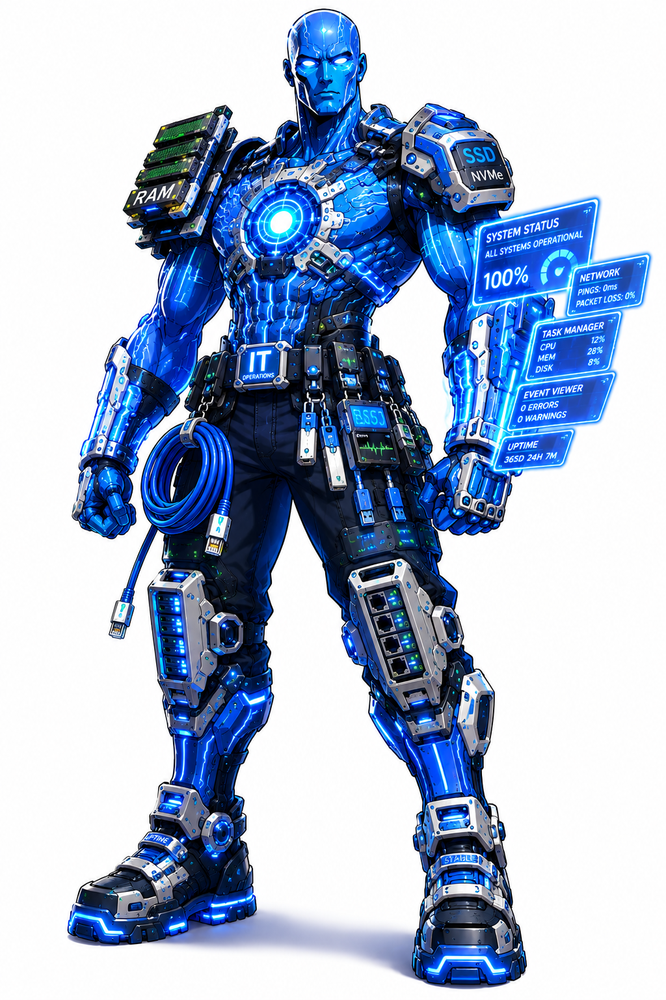
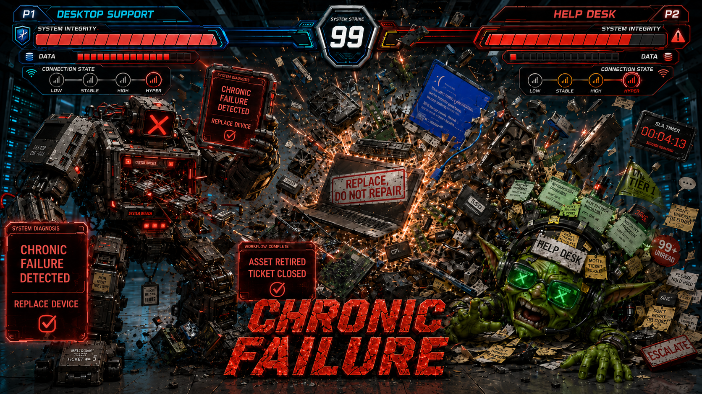

Featured Characters



System Strike is an original entertainment IP where IT support, networking, infrastructure, cybersecurity, and threat actors are transformed into larger-than-life arcade fighting game characters. Every fighter, move, finisher, and stage is inspired by real-world technology concepts.
From Desktop Support and DNS to Botnet and Phishing, System Strike brings the worlds of IT operations and cybersecurity together in a character-driven fighting game universe designed for entertainment, education, and storytelling.


DDoS Attack demonstrates how a botnet overwhelms a target with massive amounts of traffic, degrading service availability and network performance.

Every System Strike battle ends with catastrophic system collapse. When System Integrity reaches zero, only one outcome remains: SYSTEM FAILURE